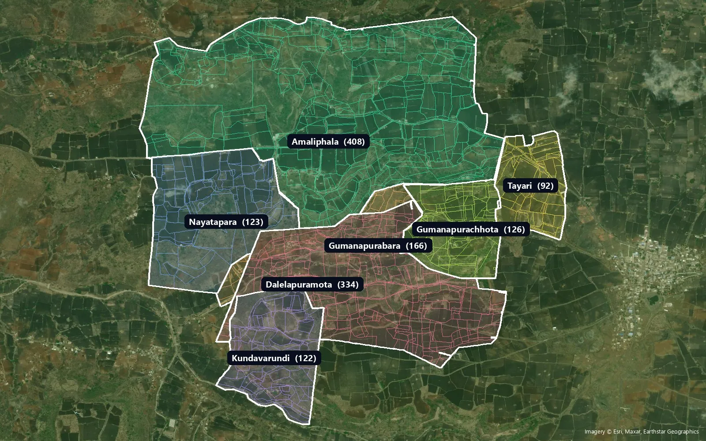
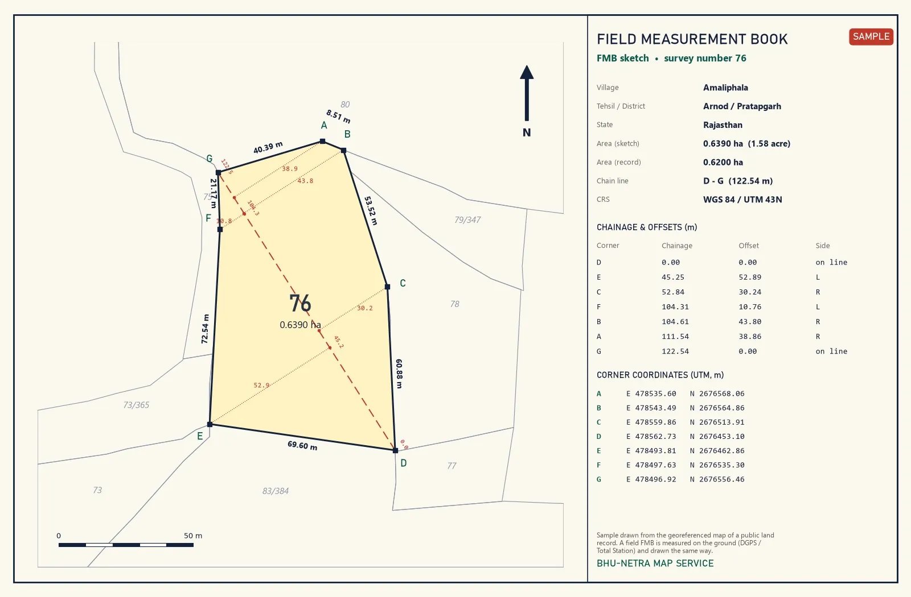
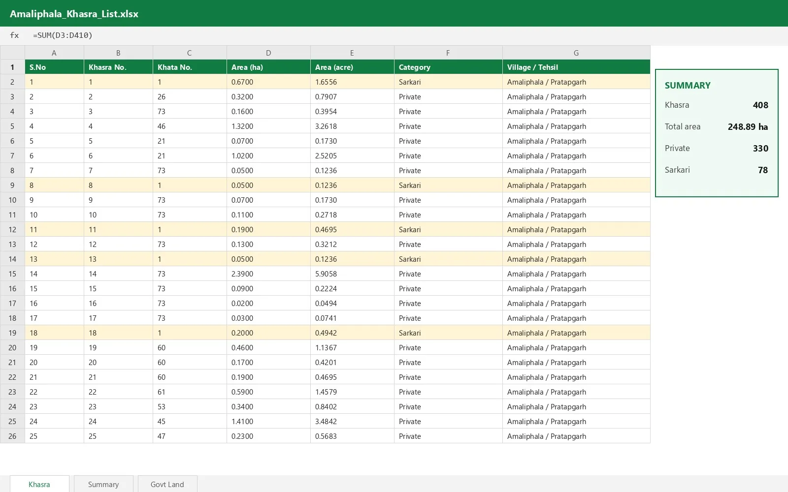
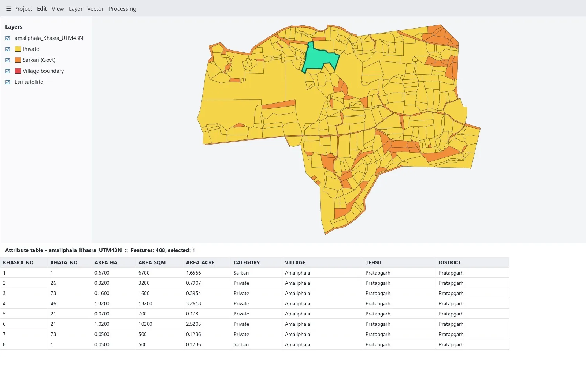
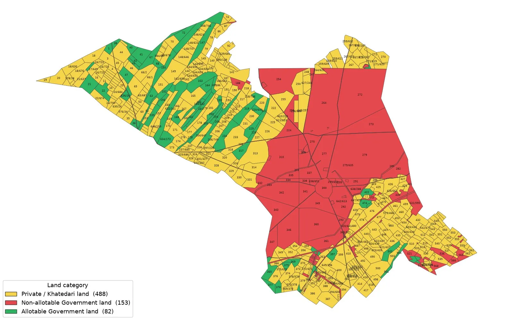
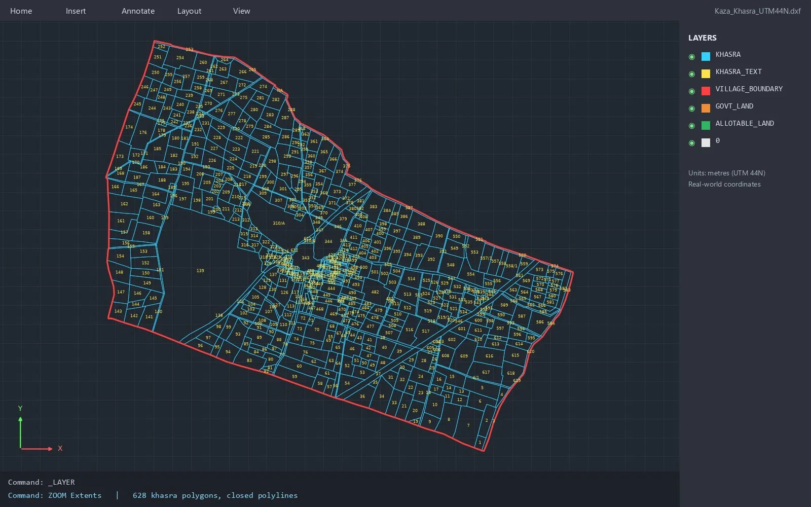
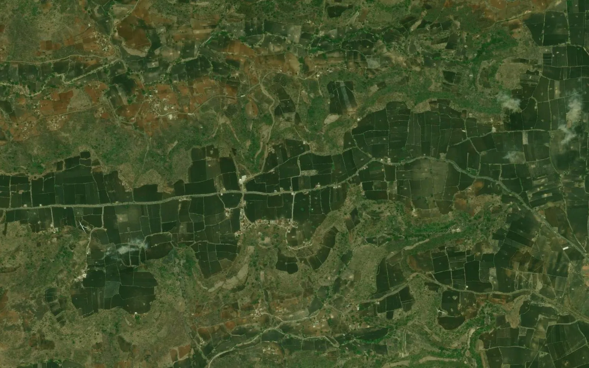

GUIDES
Guides
Practical notes on khasra maps, GIS files and land surveys.

How to open a khasra map (KML) in Google EarthStep-by-step: open a georeferenced khasra map KML / KMZ in Google Earth Pro, Google Earth web and Google My Maps, find a khasra number and measure an area.

Khasra maps for solar and wind projects: what developers needWhy solar and wind developers need georeferenced khasra maps: land identification, government land, aggregation, layout design and transmission routes.

From village cadastral map to KML, DWG and SHP: how digitization worksHow a village cadastral (khasra) map becomes a georeferenced GIS file: digitizing, topology cleaning, georeferencing to satellite imagery and export to KML, DWG, SHP and Excel.

FMB for wind projects: what it is and what developers needWhat an FMB (Field Measurement Book) sketch is, why every wind turbine (WTG) survey number needs one, what it must show and how BHU-NETRA prepares FMBs, land schedules and khasra maps for wind farms.
Bhunaksha map to KML, DWG and SHP: how to get a georeferenced village mapWhy a Bhunaksha / bhu-naksha village map cannot simply be opened in Google Earth, and how it becomes a georeferenced KML, DWG or SHP file with every khasra as a polygon.
How to get the cadastral (revenue) map of any village in IndiaWhere village revenue / cadastral maps come from in each state, what the khasra, survey and plot numbers mean, and how to get the map as KML, DWG or SHP for a project.

Khasra, khesra, gat, survey number: land-record terms of each state explainedThe plot number, record of rights and map name used in each Indian state - khasra, khesra, gat, survey / hissa, dag, LP number, jamabandi, khatauni, 7/12, RTC, patta, adangal - in one table.

KML vs DWG vs SHP vs Excel: which khasra map format does your land team need?A practical comparison of KML / KMZ, DWG / DXF, Shapefile (SHP) and Excel for khasra maps - who uses each format, what it holds, coordinate systems and common mistakes.

How to check government land in a village: records, maps and common mistakesA practical guide to finding government (sarkari) land in a village: what the record of rights says, how to read land categories, putting them on a khasra map and checking the result before a project.

Village boundary map: where it comes from and how to use it on a land projectWhat a village boundary map is, why census outlines and cadastral (khasra) outlines differ, how a boundary is built from the khasra plots, and how to use it in KML, DWG and SHP on a project.

Land parcel maps for transmission lines: from route to khasra listHow a georeferenced khasra (land parcel) map helps a transmission line or cable route: villages crossed, tower locations, right-of-way corridor, khasra-wise land schedule and government land on the route.

Rajasthan Bhu-Naksha on a satellite map: how to read a khasra map onlineHow to find a village on the Rajasthan Bhu-Naksha, read khasra numbers and the jamabandi, and why the map has to be georeferenced before it lines up with satellite imagery in Google Earth.